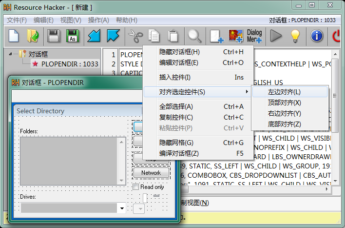
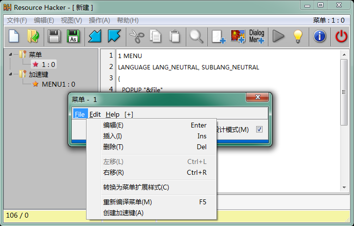
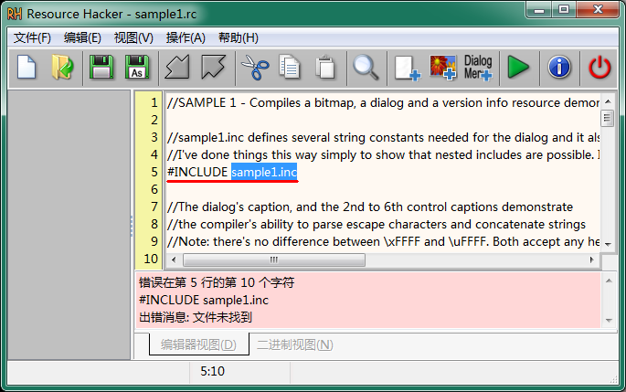
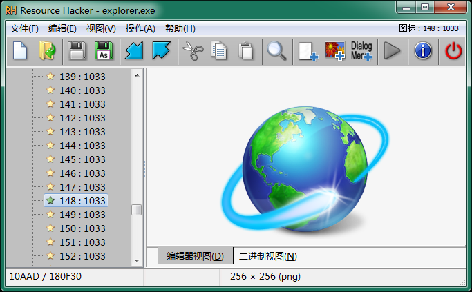
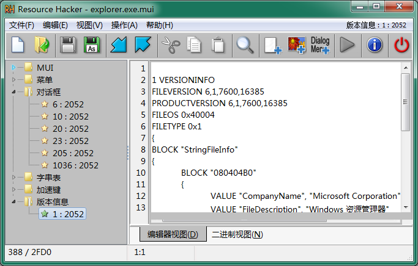
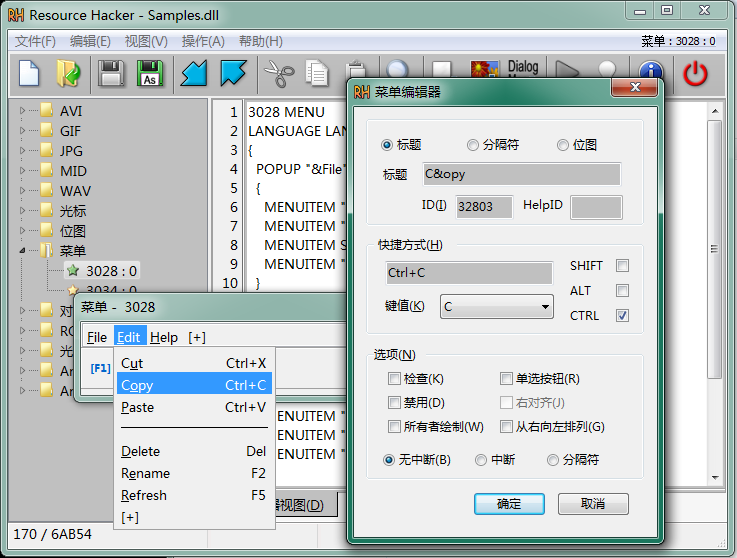
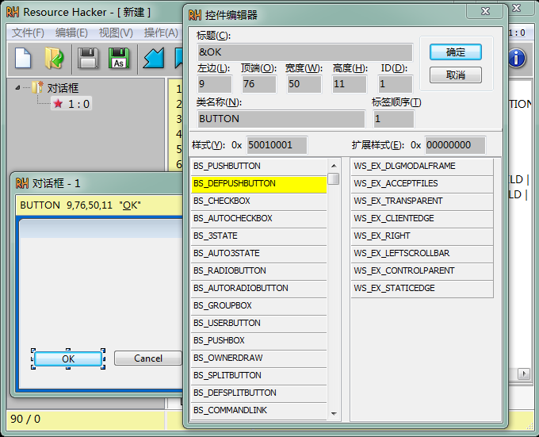
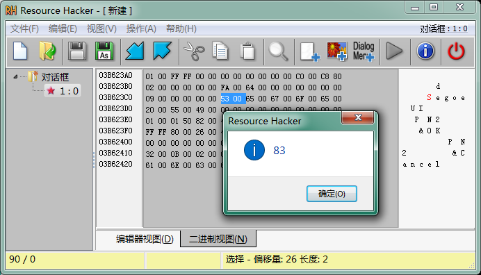
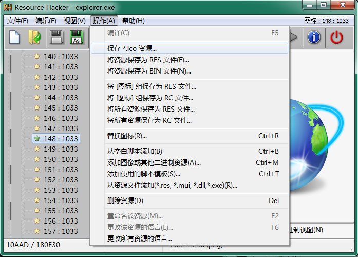

命令行语句:
| 开关 | 参数 |
|---|---|
| -open | filename - 要修改的文件名称。它应该是 Windows PE 文件(*.exe, *.dll 等)或编译或未编译的资源文件(*.res 或 *.rc)。 |
| -save | filename - 修改或新创建文件的新名称，修改后打开的文件或提取的资源。 |
| -resource | filename - 包含要添加到打开文件的资源。 |
| -action | 在打开的文件上要执行的操作
|
| -mask | 资源掩码
- Type,Name,Language 逗号是强制性的，而每种 Type, Name 和 Language 都是可选的 |
| -log | Filename 或 CONSOLE
或 NUL CONSOLE 可以缩写为 CON 记录所执行操作的细节 如果省略此开关，则日志将写入 resourcehacker.log |
| -script | filename - 包含多命令脚本，而不是用于获取更多信息的资源脚本：-help 脚本 |
| -help | options - 命令行或脚本(始终记录到 CONSOLE)，其他开关将被忽略。 |
ResourceHacker.exe -help
@pause :: 以便在 CMD 窗口关闭之前, 我们可以看到控制台输出。
rh.exe -open .\in\resources.rc -save .\out\resources.res -action compile -log NUL
rh.exe -open old.exe -save new.exe -action addskip -res my.ico -mask ICONGROUP,MAINICON,
rh.exe -open source.exe -save icons.ico -action extract -mask ICONGROUP,MAINICON, -log CON
@pause
rh.exe -open source.exe -save savedicons.rc -action extract -mask ICONGROUP,, -log rh.log
ResourceHacker.exe -script myscript.txt
ResourceHacker.exe -script ScriptFile
//注释前面有双斜杠
[FILENAMES]
Open=
Save=
Log=
[COMMANDS]
//以下一个或多个命令...
-add SourceFile, ResourceMask
-addskip SourceFile, ResourceMask
-addoverwrite SourceFile, ResourceMask
-addoverwrite SourceFile, ResourceMask
-modify SourceFile, ResourceMask
-extract TargetFile, ResourceMask
-delete ResourceMask
//此脚本删除 MyProg.exe 中的所有语言中性(0)字串表、
//菜单和对话框资源项, 然后用俄语 (1049) 项替换它们...
[FILENAMES]
Exe= MyProg.exe
SaveAs= MyProg_Rus.exe
Log= MyProg_Rus.log
[COMMANDS]
-delete MENU,,0
-delete DIALOG,,0
-delete STRINGTABLE,,0
-add MyProg_Rus.res, MENU,,1049
-add MyProg_Rus.res, DIALOG,,1049
-add MyProg_Rus.res, STRINGTABLE,,1049
//此脚本更新 2 个位图和 MyProg.exe 中的一个图标...
[FILENAMES]
Exe= MyProg.exe
SaveAs= MyProg_Updated.exe
[COMMANDS]
-addoverwrite Bitmap128.bmp, BITMAP,128,
-addoverwrite Bitmap129.bmp, BITMAP,129,0
-addoverwrite MainIcon.ico, ICONGROUP,MAINICON,0
//此脚本将 MyProg.exe 中的所有资源替换为 MyProgNew.res 中的所有资源。
[FILENAMES] Exe= MyProg.exe SaveAs= MyProg_Updated.exe [COMMANDS] -delete ,,, //删除之前的所有资源... -add MyProgNew.res ,,, //添加所有新资源
修正了: 显示多字节字符时编辑器字体不正确
修正了: 错误处理 #define 指令
修正了: 对话框资源中状态栏对齐方式的错误处理
修正了: 在编辑和二进制视图之间交换时行号断开
修正了: 相对路径名被破坏
修正了: 分析某些 #include 文件时出错报告不正确
添加了: 对多行注释 /*... */ 的支持
更新了: 现在可以打开和保存非资源类型文件
添加了: 上下文帮助中的内部链接
在 5.0.42 版本中的更新:
增加了：一个新的菜单资源设计器。
更新了：对话框资源设计器进行了重大更新
增加了：对每种资源类型可选二进制视图
更新了：改进了搜索（使用更多上下文相关的对话框）
错误修复：修正了许多错误